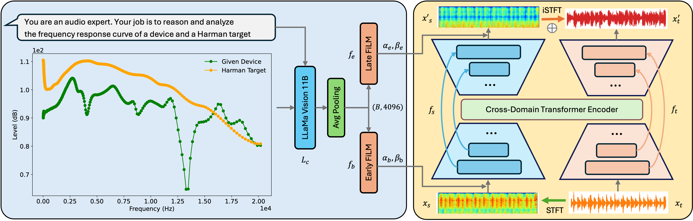

Abstract. Device-aware music synthesis can mimic playback quality across a variety of devices or emulate device-specific characteristics for users lacking access to specific hardware. Existing works largely overlook the incorporation of conditional device characteristics as input. While the integration of vision-language models (VLMs) and graphical frequency response curves (FRCs) holds significant potential, it also remains unexplored. In this work, we propose a novel approach that combines textual prompts and FRCs as line graphs, processed by a pre-trained large language model to extract semantic embeddings. These embeddings condition a pre-trained hybrid transformer demucs with feature-wise linear modulation layers, enabling efficient and interpretable device-specific transformations. Fine-tuned on a dataset of off-the-shelf playback devices, our system supports zero-shot adaptation to unseen devices and enables practical applications such as device-style augmentation, spectral fidelity adjustment, and personalized music-to-music transformation.
